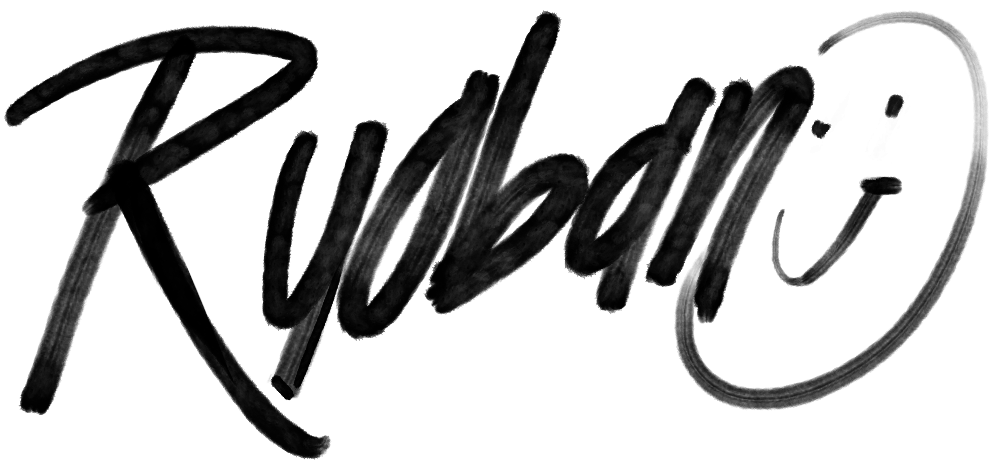
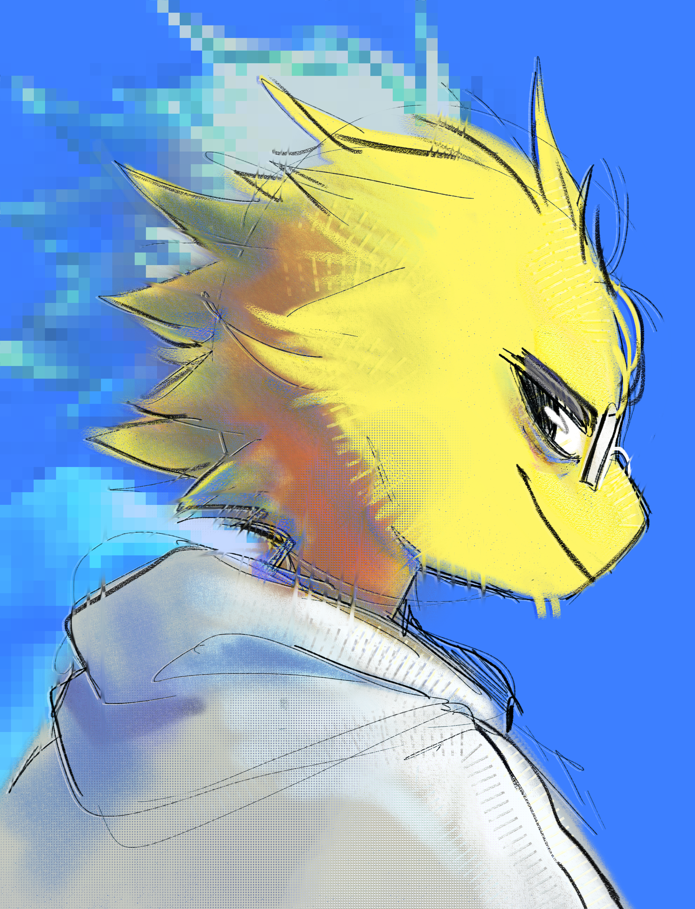
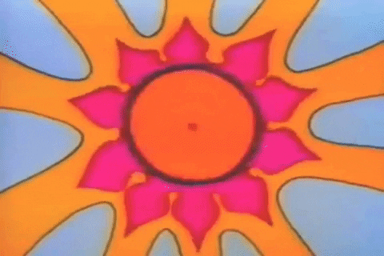
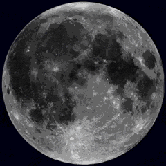
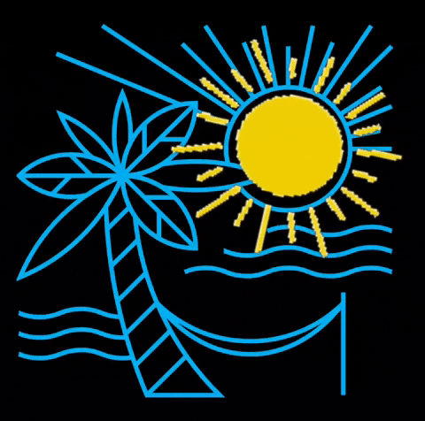

Iniciando protocolo de diseño..._

System Status: Online

> query_database --projects
| ID | PROYECTO | ESTADO / DESCRIPCIÓN |
|---|---|---|
| [P-01] | Paraxterra | Adeline y Albert buscan la luna. |
| [P-02] | Metal Worms | Historia sobre ABEA y ASCEND. |
| [P-03] | HYPERZONE | Archivo musical y multimedia. |
| [P-04] | Dev_Blog | Bitácora de desarrollo y conceptos. |
> run character_bios.exe

Adeline
Exploradora principal de Paraxterra. Analítica y curiosa. Busca incansablemente la luna junto a Albert. [ Perfil Completo ]

Albert
El compañero razonable de Adeline. Experto en análisis de datos antiguos. Suave pero firme en su misión. [ Perfil Completo ]

Palmer
Identidad que prefiere la suavidad y la razón. Disfruta de la vida cotidiana y mundana junto a Derry. [ Perfil Completo ]

Ryoban
Identidad principal. Creador de mundos y analista curioso. Prefiere el diseño directo y minimalista. [ Perfil Completo ]

Moru
Perfil secundario. Enigmático y de pocas palabras. Acceso a datos restringido. [ Perfil Completo ]
> cat blog.txt
Explico por qué desarrollo estos proyectos.
>> Ver entradas